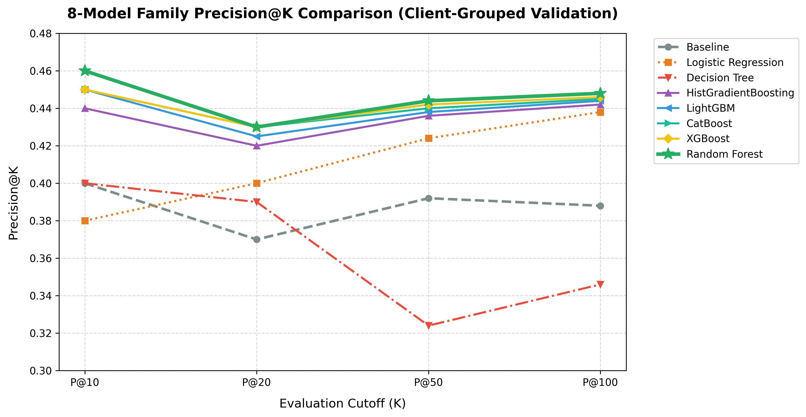
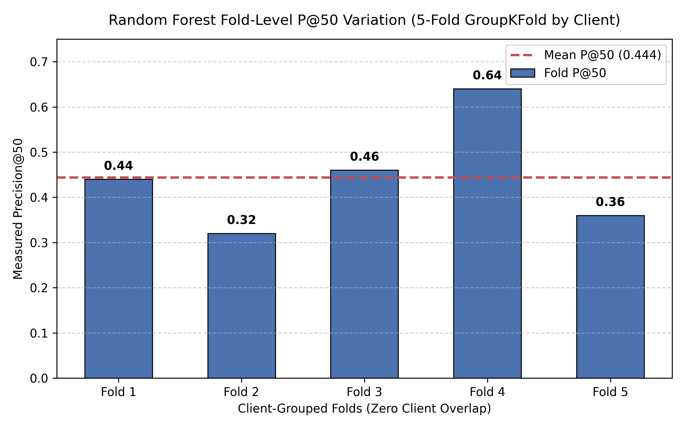

2. Introduction / Problem Statement
FlyRank's content problem is not simply identifying whether a page has changed performance. In a large content portfolio, the harder practical question is which pages should a team look at first when there are limited people and limited review time.
A useful system therefore needs to turn historical search-performance data into a ranked list that helps an SEO or content team focus its attention. This project treats that as a prioritization problem: use information available before the outcome period to rank pages that may experience a defined decline in clicks.
The model is intentionally designed as decision support rather than automatic content optimization. A high-ranked page is a signal for investigation, not proof that the page has a specific problem or that a particular content change will recover performance.
The evaluation also focuses on a more realistic generalization question by grouping validation by client. This helps test whether the ranking approach can provide useful signal beyond simply learning patterns from pages belonging to the same clients used during training.
Core Research Question: Which webpages should an SEO/content team review first when many pages may be experiencing search-performance decline?
3. Data
The model uses historical FlyRank search-performance data available before the May 2026 outcome period, focusing on search-performance history at the content-page level.
Data Source
The main data sources from the FlyRank warehouse release were:
fact_daily— daily search-performance records.dim_content— content-page information.dim_clients— client/group information.
Date Windows
- February 1 – April 30, 2026: Feature and training history.
- May 1 – May 31, 2026: Outcome window used to define click decline (used only for the target label, not as features).
Eligible Population
A page was included in the evaluation population only when meeting the eligibility criteria:
impressions_total >= 1000april_clicks >= 10
What Was Excluded
Some fields were excluded from the model because they were not suitable for the final task:
- Future May metrics: Excluded to prevent information leakage from the outcome period.
- Target-related fields: Such as
may_clicks, used only to construct the label. - Client and content IDs: Used for grouping, joining, and deterministic tie-breaking, not as predictive features.
- Sparse session, scroll, and AI-referral signals: Excluded due to limited coverage for this modeling population.
Public Safety & Anonymity
This paper reports aggregate results only. It does not expose client names, domain names, private URLs, private search queries, credentials, or raw production exports.
4. Methodology
Target Definition
A page was labeled as declining when its May 2026 clicks were less than 80% of its April 2026 clicks:
decline = (may_clicks < 0.8 * april_clicks)
This defines the prediction target used throughout the experiment.
Features
The Random Forest classifier used 9 historical features ending at or before the April 30, 2026 cutoff:
impressions_totalclicks_totalapril_impressionsapril_clicksfeb_clicksmomentumCTRactive_daysweighted_position
Baseline Definition
The baseline flagged a page when april_clicks < march_clicks, ranking flagged pages by April impressions. This provides a simple, realistic reference point for evaluating whether machine-learning ranking adds useful signal.
Model Architecture & Validation Design
The final model was a Random Forest classifier, selected after a controlled comparison across eight model families (Baseline, Logistic Regression, Decision Tree, HistGradientBoosting, LightGBM, CatBoost, XGBoost, and Random Forest). Performance was evaluated using 5-fold GroupKFold by client. Client identity was used strictly to define groups, ensuring zero client overlap between training and validation folds (0 client overlap per fold across all 5 folds). This tests whether the model can generalize to held-out clients.
Leakage Checks
The Week 6 leakage audit verified that future May fields were excluded, target fields were omitted from the feature matrix, IDs were non-predictive, and all features ended at or before April 30, 2026. The audit passed with zero identified future or target leakage.
5. Results
All models were evaluated on identical validation folds, eligible population (16,513 pages across 36 clients), and deterministic tie-breaking under client-grouped 5-fold validation.
| Model Family | Precision@10 | Precision@20 | Precision@50 | Precision@100 |
|---|---|---|---|---|
| Baseline | 0.400 | 0.370 | 0.392 | 0.388 |
| Logistic Regression | 0.380 | 0.400 | 0.424 | 0.438 |
| Decision Tree | 0.400 | 0.390 | 0.324 | 0.346 |
| HistGradientBoosting | 0.440 | 0.420 | 0.436 | 0.442 |
| LightGBM | 0.450 | 0.425 | 0.438 | 0.444 |
| CatBoost | 0.450 | 0.430 | 0.440 | 0.445 |
| XGBoost | 0.450 | 0.430 | 0.442 | 0.446 |
| Random Forest | 0.460 | 0.430 | 0.444 | 0.448 |
Under benchmark warehouse validation, Random Forest retained the top Precision@50 of 0.444, compared with 0.392 for the baseline, representing an improvement of 5.2 percentage points (+0.052 absolute lift).
This provides directional evidence that machine-learning ranking can help content teams focus review effort under a client-grouped validation setup. The result should not be treated as a production guarantee or service-level target.
Actual Random Forest Feature Importances (rf.feature_importances_)
| Rank | Feature | RF Gini Importance | Cumulative Share |
|---|---|---|---|
| 1 | momentum |
0.2899 | 28.99% |
| 2 | april_impressions |
0.2203 | 51.02% |
| 3 | impressions_total |
0.1921 | 70.23% |
| 4 | ctr |
0.0634 | 76.57% |
| 5 | feb_clicks |
0.0633 | 82.90% |
| 6 | weighted_position |
0.0590 | 88.80% |
| 7 | clicks_total |
0.0540 | 94.20% |
| 8 | april_clicks |
0.0512 | 99.32% |
| 9 | active_days |
0.0067 | 100.00% |
(Note: Standardized Logistic Regression coefficients are maintained separately as directional log-odds weights and are distinct from tree Gini importances.)

Figure 1: 8-model family Precision@K comparison across K = 10, 20, 50, and 100 under client-grouped validation.

Figure 2: Measured Precision@50 for the Random Forest across the 5 client-grouped validation folds.
6. Limitations & Honest Framing
A good ranking model does not need to claim that it can explain everything. This experiment shows that historical signals can help prioritize pages for review, but several boundaries matter:
- Good ranking does not mean knowing the cause: A Precision@50 of 0.444 means that, on average across validation folds, 44.4% of the top 50 ranked pages met the defined decline outcome. It does not mean the model knows why those pages declined.
- Generalization to new clients still needs to be tested further: Client-grouped validation tests the model on clients held out from training within each fold. However, completely new clients may have different content, traffic patterns, or data distributions.
- “Decline” is a definition we chose, not a universal truth: Decline was defined as May clicks < 0.8 * April clicks. Changing the threshold or outcome window could change which pages are considered declining.
- Historical performance is not a promise about the future: Evaluated on a specific February–April history and May 2026 outcome window. Search behavior and traffic patterns can change, so measured Precision@K should be treated as directional evidence, not a permanent performance guarantee.
- Correlation identifies pages for investigation, not proof of remediation: Signals like visibility, engagement, and history support prioritization, but do not prove that altering one factor will recover traffic.
- The final decision stays with a human: The model answers “Which pages should we look at first?”, not “What should we change?”. It is a prioritization tool for human review, not an autonomous content editor, causation engine, or Google algorithm predictor.
7. Ranked Recommendations
Based on the evaluated signals and experimental findings, the recommended workflow for content teams is:
- Prioritize pages with a strong model signal: Review higher-ranked pages earlier because they are more likely to match the defined decline outcome. Treat the model strictly as a ranking layer, not a final decision-maker.
- Investigate declining pages with weak search visibility: Pages showing a decline signal together with weak search visibility should receive higher-priority investigation regarding search intent and content relevance.
- Use historical signals as supporting evidence: Historical clicks, impressions, CTR, position, and momentum can help explain why a page was prioritized and guide human investigation.
- Review before making content changes: Before refreshing, rewriting, redirecting, or removing a page, a human reviewer must evaluate content quality, search intent, search visibility, and business importance.
- Monitor the model before changing the model: Treat Precision@50 = 0.444 as a reference point. Monitor performance, data quality, and feature distributions over time before retraining or altering thresholds.
Model Ranking → Human Review → Check Evidence → Choose Action → Human Approval → Manual Execution
8. Reproducibility
To ensure full auditability and reproducibility of the experimental design, code, and metrics:
- Repository Link: https://github.com/Sujan-lab-cell/flyrank-ml-internship
- Capstone Notebook Path:
work/notebooks/capstone.ipynb - Historical Feature Window: February 1 – April 30, 2026 (feature cutoff at April 30, 2026).
- Target Definition:
decline = (may_clicks < 0.8 * april_clicks).astype(int)(May 1 – May 31, 2026 outcome window). - Random Forest Model: Random Forest classifier trained on 9 historical features (
impressions_total,clicks_total,april_impressions,april_clicks,feb_clicks,momentum,CTR,active_days,weighted_position). - 5-Fold Client-Grouped Validation:
GroupKFold(n_splits=5)grouped byclient_id(0 client overlap between training and validation folds). - Evaluation Population: 16,513 eligible pages (
impressions_total >= 1000ANDapril_clicks >= 10) across 36 unique clients. - Precision@K Evaluation: Evaluated top K ranked pages at K = 10, 20, 50, and 100 across all validation folds.
9. Acknowledgments & Data Credit
This work was built on the FlyRank ML Internship dataset and research framework. We credit FlyRank for providing the anonymized search-performance dataset, data pipeline infrastructure, and evaluation guidelines.
For more details on the FlyRank platform and content performance tools, visit the official website: https://flyrank.ai.